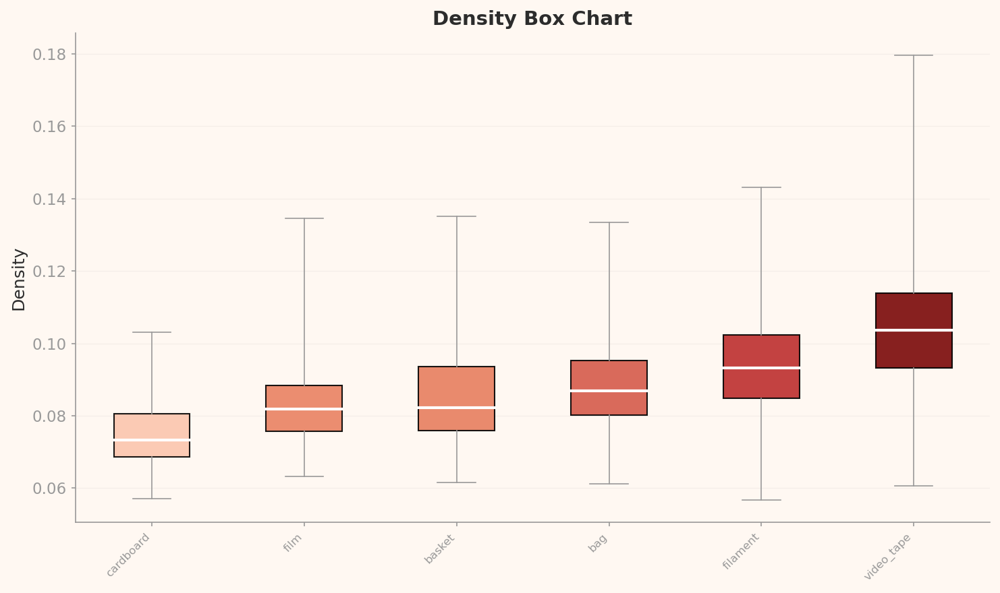
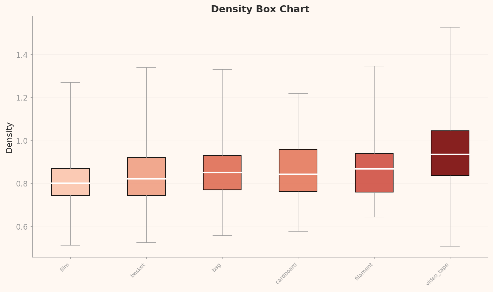
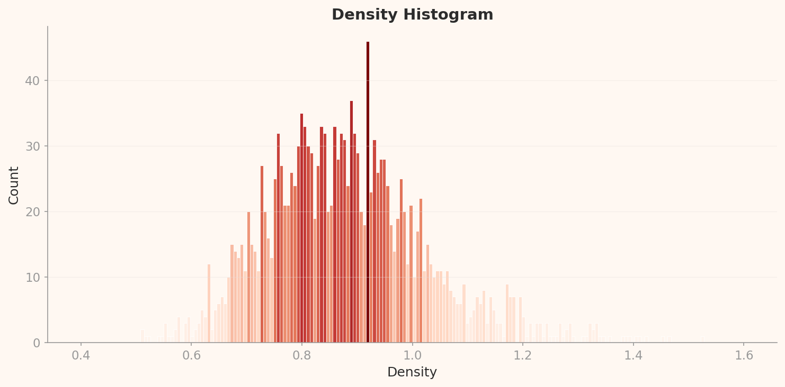
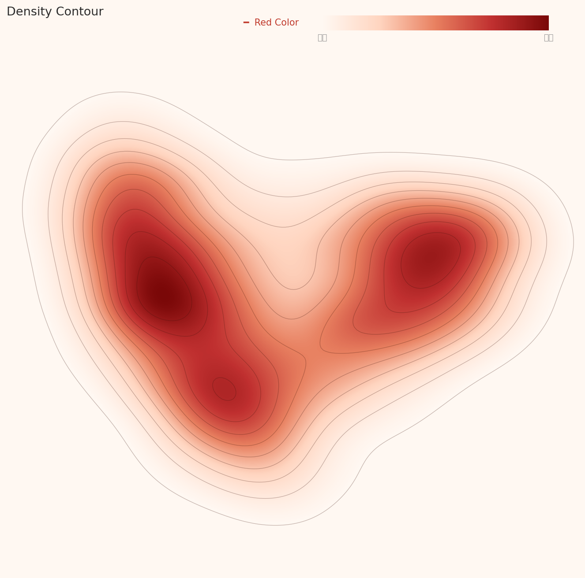

평가 방법론
이 보고서는 DataClinic의 3단계 진단 결과(Level I / II / III)를 ISO/IEC 5259-2:2024 품질측정기준(QM) 프레임으로 재해석한 독립 평가입니다. DataClinic이 측정한 수치·차트·이상치를 각 ISO QM 항목의 정의에 따라 매핑하고, Pass / Fail / 주의를 독자적으로 판정했습니다.
요약: SpectralWaste 재활용 폐기물 이미지 데이터셋(2,794장, 6클래스)을 ISO/IEC 5259-2:2024 품질측정기준(QM)으로 독립 평가했습니다. DataClinic의 3단계 진단 수치와 차트를 ISO QM 항목에 매핑한 결과, 14개 QM 항목 중 Pass 3개, Fail 5개, 주의 3개로 나타났으며, 클래스 불균형(최대비 19.6:1)과 단일 촬영 환경에 의한 대표성·다양성 부족이 핵심 문제입니다. DataClinic의 "벌크업" 처방은 ISO Bal-ML-1·Eft-ML-1 Fail 판정과 정확히 일치합니다.
1 데이터셋 개요
기본 정보
| 데이터셋명 | SpectralWaste |
| 출처 | Kaggle |
| 진단 이미지 수 | 1,709장 (전체 2,794장) |
| 클래스 수 | 6개 |
| 이미지 크기 | 276 × 256 px (RGB) |
| DataClinic 점수 | 68 / 100 (보통) |
클래스 분포 (L1 진단)
| 클래스 | 샘플 수 | 비율 |
|---|---|---|
| video_tape | 646 | 37.8% |
| basket | 384 | 22.5% |
| film | 248 | 14.5% |
| cardboard | 199 | 11.6% |
| bag | 199 | 11.6% |
| filament | 33 | 1.9% |
최대·최소 클래스 비율: 19.6 : 1 (video_tape vs filament)

▲ SpectralWaste 데이터셋 대표 이미지 콜라주 — 컨베이어 벨트 위 6종 재활용 폐기물
SpectralWaste는 프로토타입 컨베이어 벨트에서 RGB와 하이퍼스펙트럼 이미징을 동기화하여 수집된 재활용 폐기물 데이터셋입니다. 각 이미지에는 객체별 분광 스펙트럼을 요약한 막대그래프가 합성되어 있습니다. 실제 재활용 자동화 모델 학습을 목적으로 구성되었으나, 클래스 불균형과 촬영 환경의 단일성이 모델 성능에 영향을 줄 수 있습니다.
2 ISO/IEC 5259-2 평가 프레임워크
본 보고서는 ISO/IEC 5259-2:2024의 품질측정기준(QM, Quality Measure)을 SpectralWaste 이미지 데이터셋에 독립적으로 적용한 평가입니다. DataClinic의 3단계 진단 결과를 ISO QM 항목의 정의에 따라 매핑하고, 각 항목별로 독자적으로 해석·판정합니다. DataClinic이 '무엇을 측정했는가'와 ISO가 '어떤 기준으로 평가하는가'를 연결하는 것이 이 보고서의 핵심입니다.
| DataClinic 진단 단계 | 측정 내용 | 매핑되는 ISO 5259-2 QM |
|---|---|---|
| Level I | 클래스 수·샘플 수, 결측치, 픽셀 통계, 평균 이미지 | Com-ML-1/3/5, Bal-ML-1, Eft-ML-1 |
| Level II | 범용 임베딩(1280차원) 밀도 분포, 이상치, 유사도 | Sim-ML-1/2, Rep-ML-1/3, Div-ML-1, Con-ML-2, Acc-ML-7 |
| Level III | 도메인 특화 렌즈(32차원) 밀도·클러스터 분석 | Rep-ML-1, Div-ML-1/2, Bal-ML-2 |
내재적 DQC (3개)
정확성 · 완전성 · 일관성
→ DataClinic Level I
AI/ML 추가 DQC (9개)
균형·다양·대표·유사·적합·유효·감사·식별·적시
→ DataClinic Level II/III
판정 기준
✅ Pass 기준 충족
❌ Fail 기준 미달
⚠️ 주의 추가 검토 필요
— N/A 현재 미측정
3 내재적 품질 특성 평가
| QM ID | 항목 | ISO 정의 | 판정 |
|---|---|---|---|
| Com-ML-1 | 값 완전성 | Null 값이 없는 데이터 항목의 비율 | ✅ Pass |
| Com-ML-3 | 특징 완전성 | 특정 특징과 관련된 항목 중 null 없는 비율 | ✅ Pass |
| Com-ML-5 | 라벨 완전성 | 누락·불완전 라벨 샘플의 비율 | ✅ Pass |
| Con-ML-2 | 라벨 일관성 | 유사 샘플 간 라벨이 일관적인 비율 | ⚠️ 주의 |
| Acc-ML-7 | 라벨 정확성 | 이상치 탐지를 통한 오라벨 추정 비율 | ⚠️ 주의 |
Com-ML-1/3/5 — 완전성 Pass 판정 근거
DataClinic Level I 진단에서 결측치가 0건으로 확인되었습니다. 전체 1,709장 이미지가 모두 RGB 채널 3개를 갖추고 있으며, 6개 클래스에 대한 레이블이 모두 정상 부착되어 있습니다. ISO 5259-2의 완전성 기준(값, 특징, 라벨)을 모두 충족합니다.

bag

basket

cardboard

filament

film

video_tape
▲ 6개 클래스별 평균 이미지 — 각 클래스의 라벨이 정상 부착되어 평균 이미지가 정상 생성됨
Con-ML-2 / Acc-ML-7 — 주의 판정 근거
Con-ML-2 (라벨 일관성): ISO 5259-2는 임베딩 공간에서 가까운 샘플(유사 인스턴스)끼리 동일한 레이블을 가져야 한다고 정의합니다.
Level II 저밀도 분포에서 다봉형 클러스터가 확인되었으며, 클래스 경계가 불명확한 구간이 존재합니다.
유사 샘플 간 라벨 교차 오염 가능성을 배제할 수 없어 추가 검토가 필요합니다.
Acc-ML-7 (라벨 정확성): Level II/III에서 각 20개의 저밀도 이상치가 발견되었습니다.
아래 이상치 샘플 중 filament, cardboard 클래스의 저밀도 샘플은 분광 스펙트럼 합성 이미지의 특이성에서 기인할 수 있으나,
라벨 오류 가능성도 함께 검토해야 합니다.

filament (저밀도)

cardboard (저밀도)

video_tape (고밀도)

video_tape (고밀도)
▲ L2 이상치 샘플 — 저밀도(이상치)는 filament·cardboard, 고밀도(전형)는 video_tape에 집중
4 균형성 평가 — Bal-ML
| QM ID | 항목 | ISO 정의 | 측정값 | 판정 |
|---|---|---|---|---|
| Bal-ML-1 | 클래스 균형 | 클래스별 샘플 수의 균형 정도 | 표준편차 242.7, 최대비 19.6:1 | ❌ Fail |
| Bal-ML-2 | 특성 균형 | 데이터셋 내 특성 분포의 균형 | 색상·크기 편중 (L3 확인) | ❌ Fail |
Bal-ML-1 — 심각한 클래스 불균형
ISO 5259-2의 Bal-ML-1은 클래스별 샘플 수의 균형 정도를 측정합니다. 일반적으로 최대/최소 클래스 비율이 10:1을 초과하면 소수 클래스에 대한 모델 편향이 심각해집니다. SpectralWaste의 video_tape(646장) 대 filament(33장) 비율은 19.6:1로, ISO 기준에서 심각한 불균형(Severe Imbalance)에 해당합니다. filament 클래스는 33장으로 딥러닝 모델의 최소 학습 요건(통상 100장 이상)에도 미달합니다. 이 상태에서 학습하면 filament를 video_tape나 다른 주류 클래스로 오분류할 가능성이 높습니다.

▲ L2 밀도 박스 차트 — 클래스별 밀도 분포 폭 비교. video_tape의 박스 폭이 가장 넓음

▲ L3 도메인 특화 렌즈 박스 차트 — 클래스 간 밀도 편차가 L2보다 더 뚜렷하게 드러남
Bal-ML-2 — 특성 불균형
ISO 5259-2의 Bal-ML-2는 색상, 크기, 형태 등 데이터의 내재적 특성이 균형 있게 분포하는지를 측정합니다. Level III(도메인 특화 32차원 렌즈) 분석에서 "동일한 폐기물 색상과 작은 크기 특징"이 반복적으로 확인되었습니다. 이는 컨베이어 벨트라는 단일 촬영 환경으로 인해 조명, 배경, 각도 특성이 균질화되었음을 의미합니다. 실제 산업 환경에서는 다양한 조명, 배경, 폐기물 상태가 존재하므로 이 특성 편중이 도메인 갭으로 이어질 수 있습니다.

bag

filament

film

video_tape
▲ L3 클래스별 밀도 플롯 — 클래스마다 밀도 분포 형태와 위치가 달라 특성 불균형 시사
5 유사성 평가 — Sim-ML
| QM ID | 항목 | ISO 정의 | 측정값 | 판정 |
|---|---|---|---|---|
| Sim-ML-1 | 유사 인스턴스 비율 | 데이터셋 내 중복·유사 샘플의 비율 | L2 저밀도 → 중복 적음 | ✅ Pass |
| Sim-ML-2 | 클래스 내 평균 유사도 | 같은 클래스 내 샘플 간 평균 유사도 | video_tape 고밀도 집중 | ⚠️ 주의 |
Sim-ML-1 — Pass: 중복 샘플 적음
ISO 5259-2 Sim-ML-1은 임베딩 공간에서 지나치게 가까운 샘플(사실상 중복)의 비율을 측정합니다. 중복이 많으면 과적합(Overfitting)이 유발됩니다. Level II 진단에서 전체 밀도가 낮음으로 평가되었는데, 이는 역설적으로 중복 샘플이 적다는 의미입니다. SpectralWaste는 오히려 데이터가 부족한 쪽에 해당합니다. Sim-ML-1 관점에서는 Pass이나, 이것이 데이터 충분성 문제(Eft-ML)로 이어집니다.

▲ L2 밀도 히스토그램 — 전체적으로 낮은 밀도 분포. 중복 과잉이 아닌 데이터 부족을 시사

▲ L3 밀도 히스토그램 — 도메인 특화 렌즈에서도 동일한 저밀도 패턴 확인
Sim-ML-2 — 주의: video_tape 클래스 내 유사도 높음
Sim-ML-2는 같은 클래스 내 샘플들이 너무 유사하면 모델이 해당 클래스의 경계를 넓게 학습하지 못한다는 리스크를 측정합니다. Level II와 III 모두에서 고밀도 이상치 상위 4개가 전부 video_tape 클래스에서 나왔습니다. 동일 날짜·시간·촬영 세션(예: train__20230119_03_*)에서 수집된 샘플들이 집중되어 있어, video_tape 클래스 내 다양성이 낮고 클래스 내 유사도가 높은 상태입니다.
ins1 — 0.1795
ins3 — 0.1701

ins13 — 0.1667

ins13 — 0.1649
▲ L2 고밀도 상위 4개 샘플 — 모두 video_tape, 동일 세션(20230119_03) 출처
6 대표성 평가 — Rep-ML
| QM ID | 항목 | ISO 정의 | 판정 |
|---|---|---|---|
| Rep-ML-1 | 타겟 도메인 커버리지 | 실제 응용 환경의 다양한 상황을 포괄하는 정도 | ❌ Fail |
| Rep-ML-3 | 분포 간 거리 (KL-divergence) | 학습 데이터 분포와 실제 환경 분포의 차이 | ❌ Fail |
Rep-ML-1 — 타겟 도메인 커버리지 부족
ISO 5259-2의 Rep-ML-1은 학습 데이터가 실제 배포 환경의 다양한 조건을 충분히 포괄하는지를 평가합니다. SpectralWaste는 단일 프로토타입 컨베이어 벨트 환경에서 수집되었습니다. 실제 재활용 산업 현장에서는 다양한 조명 조건(형광등, 자연광, 야간), 벨트 속도, 폐기물 겹침, 오염된 폐기물, 다양한 각도 등이 존재합니다. Level III 진단에서 "도시 환경·단일 클러스터"가 확인된 것은 바로 이 도메인 편향을 반영합니다. Rep-ML-1 기준에서 실제 배포 환경 커버리지가 심각하게 부족합니다.

▲ L2 PCA 전체 분포 — 6개 클래스가 임베딩 공간에서 겹치거나 분산된 패턴

▲ L3 PCA 분포 — 도메인 특화 렌즈에서 단일 클러스터 집중. 환경 다양성 부재 확인
Rep-ML-3 — 분포 갭(KL-divergence)
Rep-ML-3는 학습 데이터 분포와 실제 환경(배포 시) 데이터 분포 간의 KL-divergence를 측정합니다. 직접적인 실제 환경 데이터가 없어 KL-divergence 수치를 산출할 수 없으나, Level II의 밀도 지형도에서 관찰되는 저밀도·파편화된 분포는 학습 데이터의 분포가 실제 환경의 연속적 분포를 대표하지 못함을 시사합니다. 단일 컨베이어 벨트 환경이라는 수집 조건의 제약을 고려할 때, 배포 후 분포 이동(Distribution Shift) 리스크가 높습니다.

▲ L2 전체 밀도 지형도 — 저밀도, 분산된 클러스터 패턴

▲ L3 전체 밀도 지형도 — 도메인 렌즈 기준 단일 밀도 집중 구간 확인
7 다양성 평가 — Div-ML
| QM ID | 항목 | ISO 정의 | 판정 |
|---|---|---|---|
| Div-ML-1 | 고유차원 다양성 | 데이터의 실효 차원수 — 얼마나 다양한 특징이 존재하는가 | ⚠️ 주의 |
| Div-ML-2 | 특징 다양성 | 색상, 형태, 크기 등 시각 특징의 다양성 | ❌ Fail |
Div-ML-1 — 다봉형 분포, 그러나 클러스터 수는 제한적
ISO 5259-2의 Div-ML-1은 데이터의 실효 차원수(Intrinsic Dimensionality)로 다양성을 측정합니다. Level II에서는 다봉형(multi-modal) 분포가 확인되어 일견 다양성이 있는 것처럼 보입니다. 그러나 Level III(도메인 특화 32차원 렌즈)에서는 단일 클러스터로 수렴합니다. 이는 범용 렌즈(1280차원)로 보면 클러스터가 나뉘어 보이지만, 실제 재활용 도메인에서 의미 있는 특징 다양성은 낮다는 뜻입니다. Div-ML-1 관점에서 주의 수준으로 판정합니다.

▲ L2 밀도 등고선 — 다봉형 분포. 범용 렌즈 기준 복수 클러스터 존재

▲ L3 밀도 등고선 — 도메인 렌즈 기준 단일 클러스터로 수렴. 실질 다양성 낮음
Div-ML-2 — 시각 특징 다양성 부족
Div-ML-2는 색상, 크기, 형태, 배경, 조명 등 시각적 특징의 다양성을 측정합니다. Level III 분석에서 "동일한 폐기물 색상과 작은 크기 특징"이 지배적으로 관찰되었습니다. 픽셀 히스토그램에서도 RGB 분포가 특정 색상 범위에 집중되어 있음이 확인됩니다. 단일 컨베이어 벨트, 일정한 촬영 거리, 동일 조명 환경이 만들어낸 결과입니다. 실제 재활용 분류 모델은 구겨지거나 오염된 폐기물, 다양한 크기와 색상, 다양한 배경을 처리해야 하므로 이 데이터셋은 Div-ML-2 기준에서 심각하게 부족합니다.
▲ L1 픽셀 히스토그램 — RGB 채널별 픽셀 분포. 특정 밝기·색상 범위에 집중된 패턴 확인
8 유효성 · 식별가능성 평가
| QM ID | 항목 | ISO 정의 | 측정값 | 판정 |
|---|---|---|---|---|
| Eft-ML-1 | 유효 샘플 비율 | 학습 임계값을 충족하는 클래스 비율 | 최소 클래스 33장 (filament) | ❌ Fail |
| Idn-ML-1 | 식별가능성(PII) | 개인 식별 정보(PII) 포함 여부 | 폐기물 이미지 — PII 없음 | ✅ Pass |
Eft-ML-1 — 유효 샘플 수 미달
ISO 5259-2의 Eft-ML-1은 각 클래스가 유효한 학습을 위한 최소 샘플 수 임계값을 충족하는지를 측정합니다. 딥러닝 분류 모델의 통상적 최소 임계값은 클래스당 100장 이상이며, 실무에서는 300장 이상을 권장합니다. SpectralWaste의 filament 클래스는 33장으로 이 임계값에 크게 못 미칩니다. bag, cardboard 클래스도 각 199장으로 권장 기준(300장) 이하입니다. 결론적으로 6개 클래스 중 4개가 권장 임계값 미달 상태입니다. 이 상태는 앞서 DataClinic이 "데이터 벌크업(Bulk-up)" 처방을 내린 것과 ISO Eft-ML-1 Fail 판정이 완전히 일치합니다.
Idn-ML-1 — Pass: PII 리스크 없음
ISO 5259-2의 Idn-ML-1은 데이터셋에 개인을 식별할 수 있는 정보(얼굴, 차량번호판, 이름 등)가 포함되지 않아야 함을 요구합니다. SpectralWaste는 컨베이어 벨트 위의 재활용 폐기물만을 촬영한 이미지로, 사람, 개인 정보, 개인을 식별할 수 있는 어떠한 요소도 포함하지 않습니다. PII 관점에서 안전하며, 상업적 이용(라이선스 제한 별도)에서 개인정보 처리 문제는 없습니다.
9 미측정 항목 (감사가능성 · 적합성 · 적시성)
| QM ID | 항목 | ISO 정의 | 현황 | 판정 |
|---|---|---|---|---|
| Aud-ML-1/2 | 감사가능성 | 데이터 계보 추적, 품질 감사 로그 | AADS 확장 예정 | — N/A |
| Rel-ML-1/2 | 적합성 | 맥락·목적 적합성, 아웃라이어 탐지 | AADS 확장 예정 | — N/A |
| Tml-ML-1 | 적시성 | 데이터 신선도, 수집 시점의 적절성 | 로드맵 | — N/A |
Tml-ML-1 (적시성) 해석: SpectralWaste는 2022~2023년에 수집된 데이터입니다. 재활용 폐기물 종류와 포장재 트렌드가 변화하고 있으므로(예: 신소재 필름, 생분해 봉투), 최신 재활용 환경을 반영하지 못할 수 있습니다. 적시성 측정 도구가 구축되면 이 항목도 평가 가능합니다.
10 종합 평가 및 처방
| DQC 그룹 | QM ID | 항목 | 판정 | 심각도 |
|---|---|---|---|---|
| 완전성 | Com-ML-1/3/5 | 값·특징·라벨 완전성 | ✅ Pass | — |
| 일관성 | Con-ML-2 | 라벨 일관성 | ⚠️ 주의 | 중 |
| 정확성 | Acc-ML-7 | 라벨 정확성 | ⚠️ 주의 | 중 |
| 균형성 | Bal-ML-1 | 클래스 균형 | ❌ Fail | 🔴 심각 |
| 균형성 | Bal-ML-2 | 특성 균형 | ❌ Fail | 높음 |
| 유사성 | Sim-ML-1 | 유사 인스턴스 비율 | ✅ Pass | — |
| 유사성 | Sim-ML-2 | 클래스 내 유사도 | ⚠️ 주의 | 중 |
| 대표성 | Rep-ML-1 | 도메인 커버리지 | ❌ Fail | 🔴 심각 |
| 대표성 | Rep-ML-3 | KL-divergence | ❌ Fail | 높음 |
| 다양성 | Div-ML-1 | 고유차원 다양성 | ⚠️ 주의 | 중 |
| 다양성 | Div-ML-2 | 특징 다양성 | ❌ Fail | 높음 |
| 유효성 | Eft-ML-1 | 유효 샘플 비율 | ❌ Fail | 🔴 심각 |
| 식별가능성 | Idn-ML-1 | PII 리스크 | ✅ Pass | — |
| 감사가능성·적합성·적시성 | Aud/Rel/Tml | — | — N/A | — |
🔴 즉각 조치
- Bal-ML-1: filament 클래스 데이터 수집 또는 합성 데이터 보강 (최소 300장 목표)
- Eft-ML-1: 전체 4개 클래스 벌크업 — 데이터 수집 or 증강
🟠 중기 개선
- Rep-ML-1: 다양한 조명·배경·각도의 추가 촬영 환경 확보
- Div-ML-2: 오염·구겨진·혼합 폐기물 샘플 포함
- Bal-ML-2: 색상·크기 특성 다변화 수집
🟡 모니터링
- Con-ML-2: 유사 샘플 간 라벨 교차 검수
- Acc-ML-7: 저밀도 이상치 20개 수동 라벨 검토
- Sim-ML-2: video_tape 세션 다양화
DataClinic 처방 vs ISO 5259 판정 일치 확인
DataClinic이 제안한 "데이터 벌크업(Bulk-up)" 처방은 ISO 5259-2의 Bal-ML-1(클래스 불균형)과 Eft-ML-1(유효 샘플 부족) Fail 판정과 정확히 일치합니다. 두 체계가 서로 다른 방법론으로 동일한 결론에 도달한다는 점에서, DataClinic의 진단 결과가 ISO 국제 표준의 언어로 검증됩니다. 이는 DataClinic이 ISO 5259-2 QM을 실질적으로 구현한 도구임을 재확인합니다.
참고 자료
- [1] ISO/IEC JTC 1/SC 42. (2024). ISO/IEC 5259-2:2024 — Part 2: Data quality measures.
- [2] DataClinic Report #223 — SpectralWaste. dataclinic.ai/en/report/223
- [3] SpectralWaste Dataset. Kaggle
- [4] Pebblous. (2025). AI 데이터 품질 표준과 페블러스 데이터클리닉: ISO/IEC 5259-2 정량적 매핑